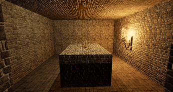
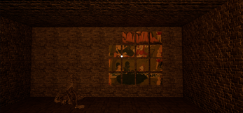
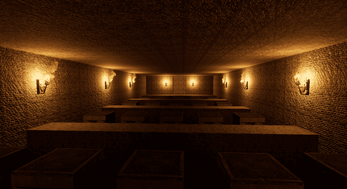
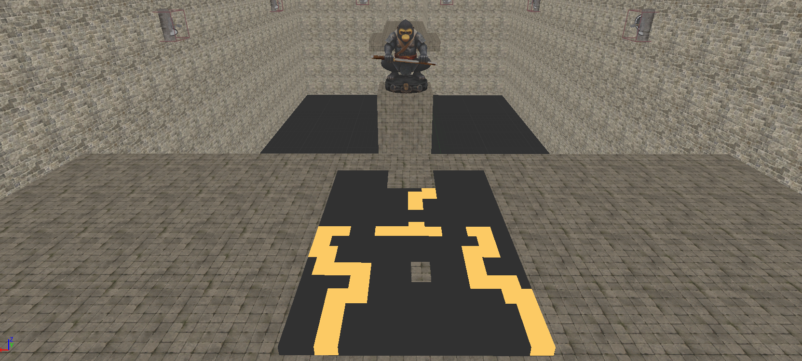
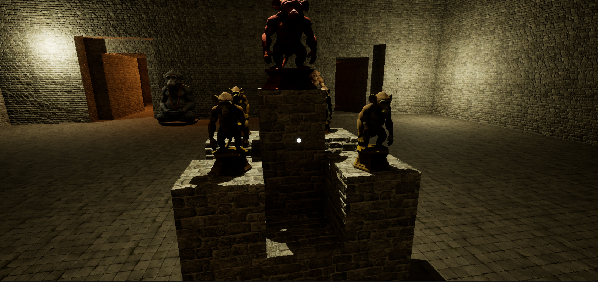

Volver
DESCRIPCIÓN
Vanara's Chamber es un emocionante escape room con una cautivadora temática de templo antiguo. En esta experiencia , te adentrarás en un enigmático templo lleno de misterios y desafíos. A medida que exploras las profundidades del templo, tendrás que enfrentarte a una serie de ingeniosos minijuegos y pruebas de habilidad que pondrán a prueba tu lógica y creatividad. Cada pista y rompecabezas resuelto te acercará un paso más a escapar . Sumérgete en la atmósfera única de Vanara's Chamber y descubre si tienes lo necesario para superar los retos del templo y encontrar la salida antes de que sea demasiado tarde.
¡La aventura te espera!

JUEGO DEL 15
El Juego del 15 es un clásico rompecabezas deslizante que desafía la mente y pone a prueba la capacidad de observación, planificación y lógica del jugador
. El tablero, de 4x4 casillas, contiene 15 piezas numeradas que deberás reorganizar en orden ascendente, utilizando el único espacio vacío para moverlas estratégicamente.
Aunque parece simple a primera vista, resolverlo puede ser todo un reto mental que requiere paciencia, concentración y un toque de ingenio. ¿Serás capaz de resolverlo sin
cometer errores y en el menor tiempo pasible? ¡Pon a prueba tus habilidades y disfruta de la satisfacción de completar este rompecabezas clásico!

PLACAS
En este desafiante nivel del juego, las placas del laberinto pondrán a prueba tu capacidad de atención al detalle. Durante tu recorrido por los pasillos,
habrás encontrado una serie de señales y símbolos misteriosos que ahora cobran sentido. Solo si logras recordar y aplicar correctamente la información visual
obtenida podrás avanzar. Cada placa es una pista oculta esperando ser interpretada. No subestimes ningún detalle, porque en Vanara’s Chamber, hasta la más mínima
pista puede marcar la diferencia entre el éxito y el fracaso.

PASILLO INVISIBLE
El Pasillo Invisible es una verdadera prueba de memoria, percepción espacial y valentía. En este tramo del templo, el suelo desaparece ante tus ojos y solo aquellos
que recuerdan el camino exacto podrán cruzar con éxito. Un paso en falso puede hacerte retroceder o peor aún, comenzar desde cero. La clave está en observar cuidadosamente,
confiar en tu intuición y mantener la calma. ¿Tienes lo que se necesita para atravesar lo desconocido y llegar al otro lado?

ESTATUAS
La etapa final de Vanara’s Chamber te enfrenta a un enigma ancestral: las enigmáticas estatuas de mono situadas en el corazón del templo. Para completar el juego y
desbloquear la salida, deberás descubrir la secuencia correcta para moverlas. Este desafío no es solo físico, sino también simbólico, pues las estatuas ocultan secretos
milenarios que solo un verdadero explorador sabrá interpretar. Observa, deduce y actúa con precisión, porque solo así podrás culminar esta increíble travesía y convertirte
en el héroe que conquistó el templo perdido.
